איזו דמות תרצו שתלווה אתכם?
אתם מעלים תמונה לסטורי, אבל משהו נראה מוזר...

כדי שהתמונה לא תתעוות, צריך לשמור על יחס קבוע בין הרוחב
לגובה שלה, המתאים לממדי המסך.

שלי ☹
לדוגמה,
כדי שהתמונה תתאים למסך הטלפון הנייד,
היחס בין הרוחב שלה לגובה שלה, צריך להיות 9:16.
אם גובה התמונה המקורית הוא 24 ס"מ,
איך נמצא את רוחב התמונה שישמור על היחס המתאים?

"בערך" וזה לא יוצא
טוב
פרופורציה היא שוויון בין יחסים.
פרופורציה משמשת אותנו להשוואה בין שני מצבים.
לדוגמה - השוואת היחס של הרוחב לאורך עבור זוג תמונות.
כשידוע יחס מסוים, וידוע גם ערך אחד מיחס אחר שאמור להיות שווה לו – אפשר למצוא
את הנתון הרביעי החסר, כך ששני היחסים יישארו שווים.
ביחידה זו נלמד כיצד לעשות זאת.
איך מוודאים שפרופורציה נשמרת?
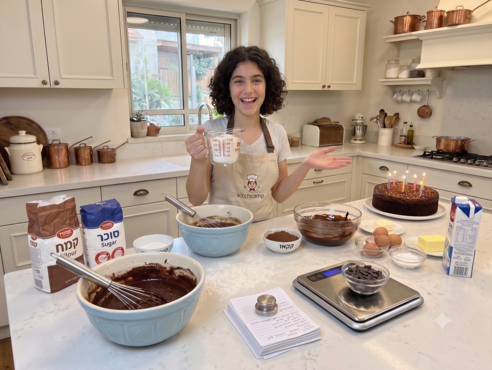
ניקח דוגמה מהמטבח של אביבית:
במתכוני אפייה, כמויות המרכיבים יכולות להופיע בגרמים
(יחידת משקל) או בכוסות מדידה (המודדות את נפח
המרכיבים).
כיצד נוכל לעבוד עם כוסות מדידה, כאשר מתכון רשום
בגרמים?
איך מוודאים שפרופורציה נשמרת?
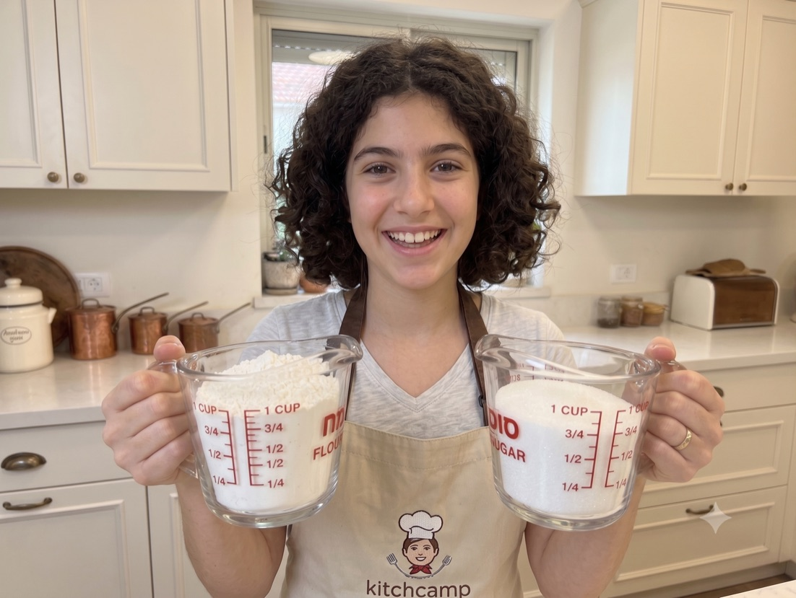
כמות הגרמים שמכילה כוס מדידה שונה בין מרכיבים שונים.
לדוגמה, כוס קמח שוקלת פחות מכוס סוכר.
ניתן להיעזר בפרופורציה (שוויון בין יחסים) בכדי להעביר כמויות
מגרמים לכוסות מדידה באופן מדויק.
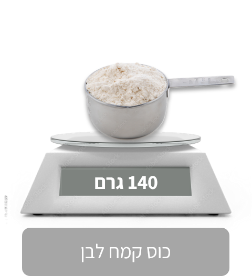
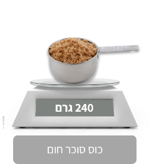
אביבית אופה עוגה
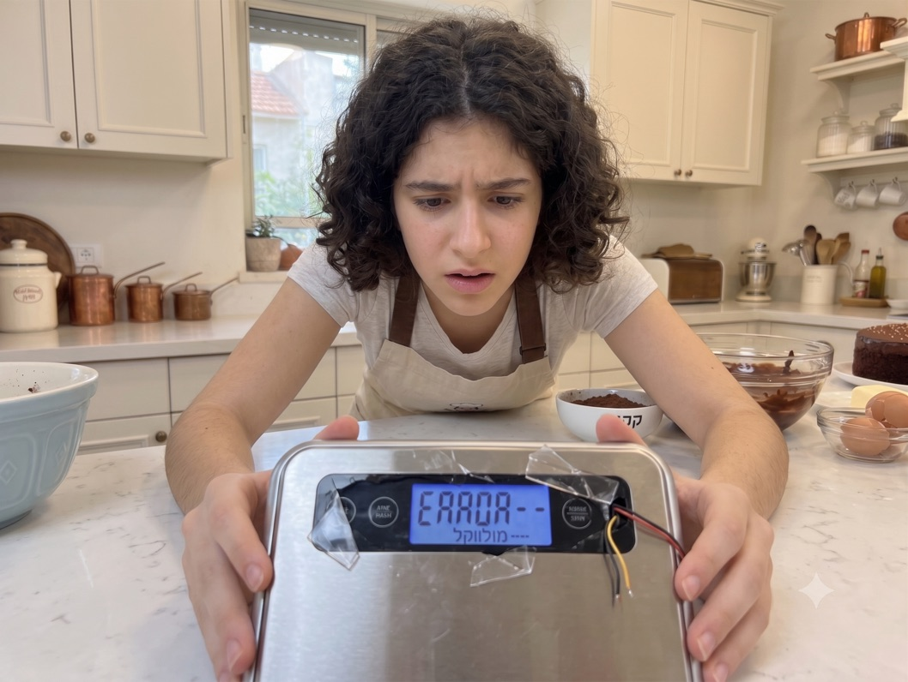
אביבית רוצה לאפות את עוגה לכבוד יום ההולדת של אמא
שלה.
כמויות המרכיבים במתכון מצוינות בגרמים, אבל המשקל
הדיגיטלי שלה התקלקל ויש לה רק כוסות מדידה.
במתכון כתוב שצריך 280 גרם קמח.
אביבית חיפשה באינטרנט ומצאה:
איך נמיר גרמים לכוסות מדידה?
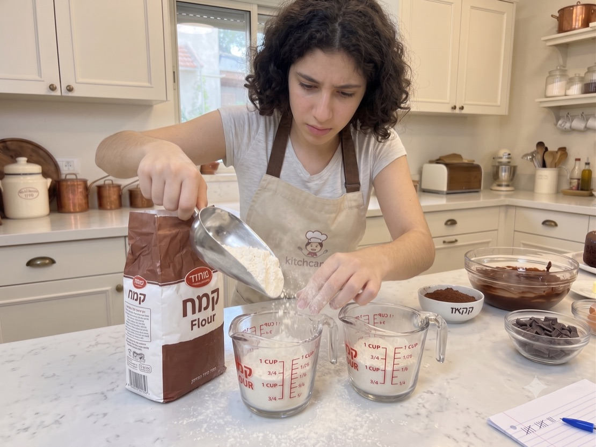
היחס עבור קמח הוא: 1 כוס קמח לבן = 140 גרם
לפי המתכון, צריך 280 גרם קמח.
נסמן: x - כמות כוסות הקמח הדרושות לאביבית.
השלימו את טבלת הפרופורציה על ידי גרירה:
| יחס ידוע | המתכון של אביבית | |
|---|---|---|
| מספר כוסות | 1 | |
| כמות בגרמים |
איך נמיר גרמים לכוסות מדידה?
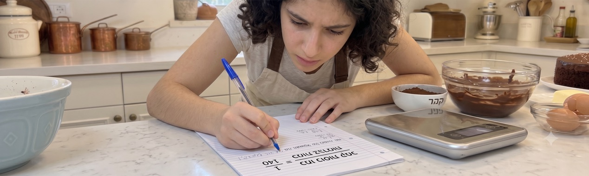
כדי לשמור על דיוק , ניעזר בפרופורציה –
שוויון יחסים בין מספר כוסות המדידה לכמות בגרמים.
בכתיבת פרופורציה, יש חשיבות גדולה לסדר המילים והמספרים.
איך נמיר גרמים לכוסות מדידה?
בהנתן טבלת הפרופורציה המלאה:
| יחס ידוע | המתכון של אביבית | |
|---|---|---|
| מספר כוסות | 1 | x |
| כמות גרמים | 140 | 280 |
קבעו - מה משוואת הפרופורציה המתאימה? בחרו בכל התשובות המתאימות.
איך נמיר גרמים לכוסות מדידה?
נדגיש שוב:
אם נבחר לכתוב את היחס בין כוסות (1) לגרמים (140), יש לכתוב כל יחס נוסף בפרופורציה כך
שהכמות בכוסות תהיה במונה והכמות בגרמים במכנה.
שאביבית רוצה לחשב
קמח במתכון
לגרמים עבור קמח לבן
כמה כוסות קמח לבן צריך במתכון?
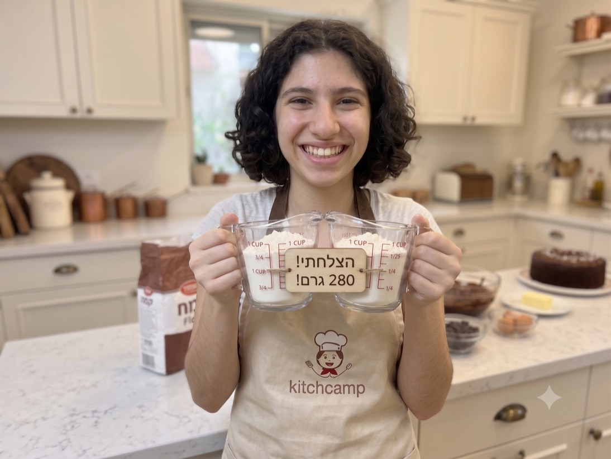
נשים לב ש: 140 · 2 = 280
כדי שיתקיים שוויון, השבר x280 צריך להיות הרחבה פי 2 של השבר 1140
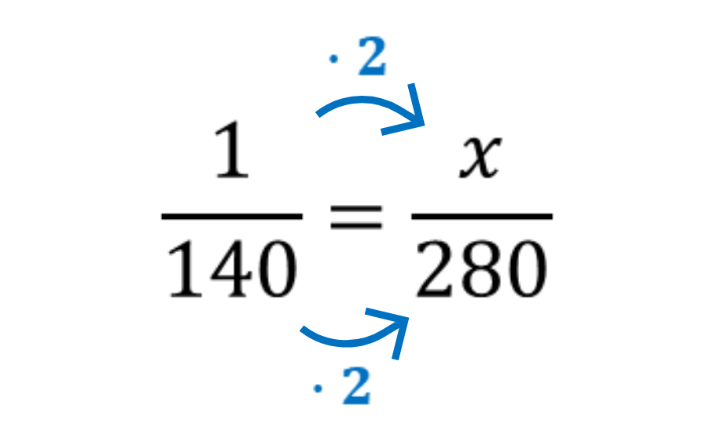
ולכן: x = 1 · 2 = 2
כלומר, אביבית צריכה 2 כוסות קמח.
כמה כוסות סוכר אביבית צריכה?
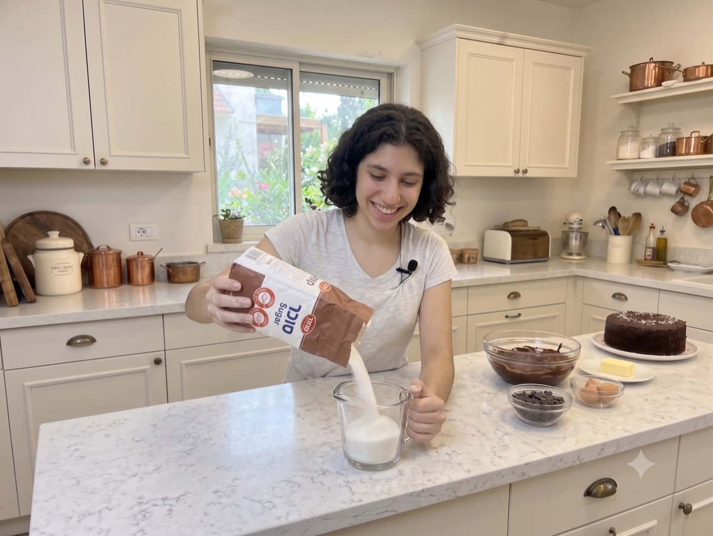
במתכון כתוב שצריך 300 גרם סוכר.
אביבית חיפשה שוב באינטרנט ומצאה:
נסמן: y - כמות כוסות הסוכר הדרושות לאביבית.
השלימו את טבלת הפרופורציה ע"י גרירת המספרים למקום הנכון:
| יחס ידוע | המתכון של אביבית | |
|---|---|---|
| מספר כוסות סוכר | y | |
| כמות סוכר בגרמים |
כמה כוסות סוכר אביבית צריכה?
| יחס ההמרה | המתכון של אביבית | |
|---|---|---|
| מספר כוסות סוכר | 1 | y |
| כמות סוכר בגרמים | 200 | 300 |
היעזרו בטבלת הפרופורציה ובחרו במשוואת הפרופורציה המתאימה:
כמה כוסות סוכר אביבית צריכה?
| יחס ההמרה | המתכון של אביבית | |
|---|---|---|
| מספר כוסות סוכר | 1 | y |
| כמות סוכר בגרמים | 200 | 300 |
אם y מייצג את כמות כוסות הסוכר שמתאימה ל-300 גרם, נכתוב את משוואת הפרופורציה כך:
שאביבית רוצה לחשב
לגרמים עבור סוכר
סוכר במתכון
כמה כוסות סוכר אביבית צריכה?
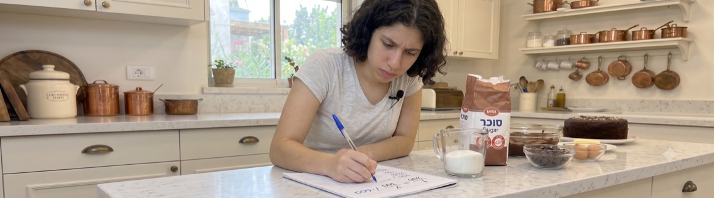
כדי למצוא את y (כמות כוסות הסוכר),
הפעם נפתור את המשוואה על ידי הכפלה במכנה המשותף:
המשותף
כלומר, אביבית צריכה להכנת העוגה 1.5 כוסות סוכר.
סרטון White Board — טבלת פרופורציה
הקובץ טרם נמסר
עוד מעט נתחיל לתרגל,
רגע לפני, בואו נפתור תרגיל אחד יחד
בואו נפתור תרגיל ראשון יחד
התבוננו בתרגיל הבא. אל תפתרו אותו, רק הסתכלו על הנתונים וחישבו האם יש לכם כיוון לפתרון.
חברת צעצועי הרכבה החליטה לבנות דגם ענק של מכונית יוקרה.
כדי שהדגם המוגדל ייראה כמו הדגם המקורי, עליה לשמור על פרופורציה בין
הממדים של שני הדגמים.
גובה הדגם המקורי הוא 4 ס"מ, אורכו 16 ס"מ.
החברה מעוניינת שאורך הדגם המוגדל לתצוגה
יהיה 80 ס"מ.
מה צריך להיות גובה הדגם המוגדל כדי תישמר הפרופורציה?
| דגם מקורי | דגם מוגדל | |
|---|---|---|
| גובה | ||
| אורך |
מה נשאר לנו בראש?
שתי שאלות קלילות לחימום לפני שנתקדם
שאלה 1
היחס בין 10 ל-x שווה ליחס בין 6 ל-15.
מצאו את x.
שאלה 2
במזנון הקולנוע מוכרים פופקורן בתפזורת במחיר קבוע לפי משקל.
על השלט כתוב "המחיר לפי משקל: 11 ₪ ל-100 גרם פופקורן".
שירה ורז מילאו שקית פופקורן במשקל 300 גרם.
כמה עליהם לשלם?